Brand Identity · Capstone
Emilia's Graces
A complete brand identity system for Emilia's Graces, a small-batch granola company. Developed as part of JMU's SMAD ID Capstone, a program that has run for 10 years.
Brand Guide
As social media manager and photographer, I developed the imagery guidelines, shot all product photography, and designed the social media direction within the brand guide.
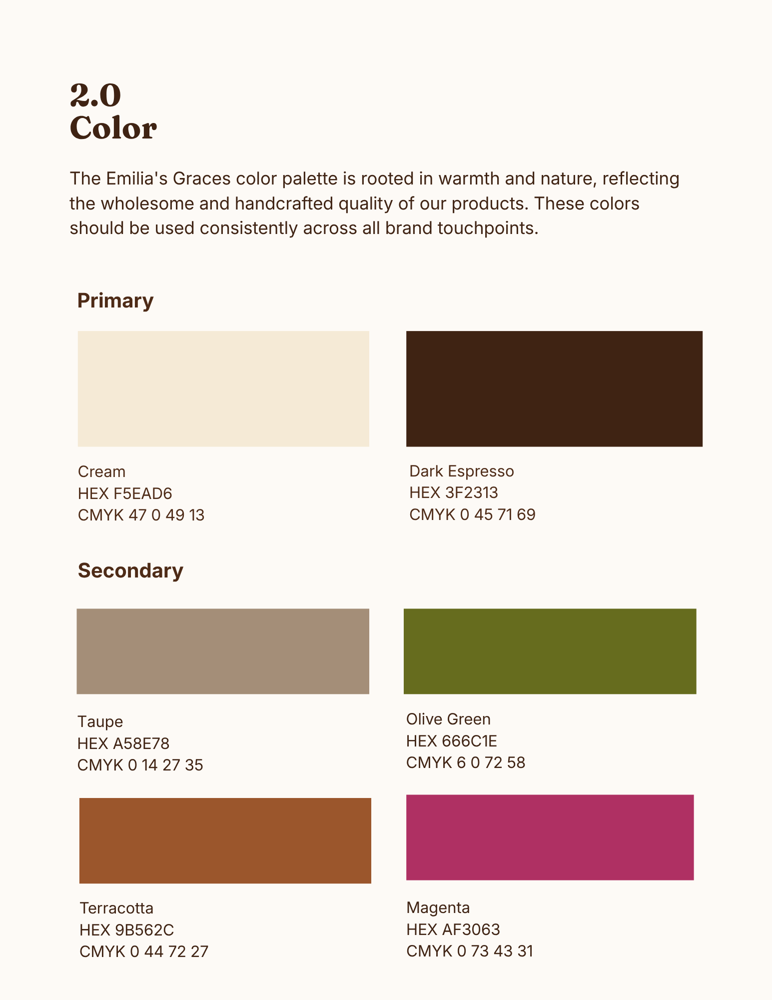
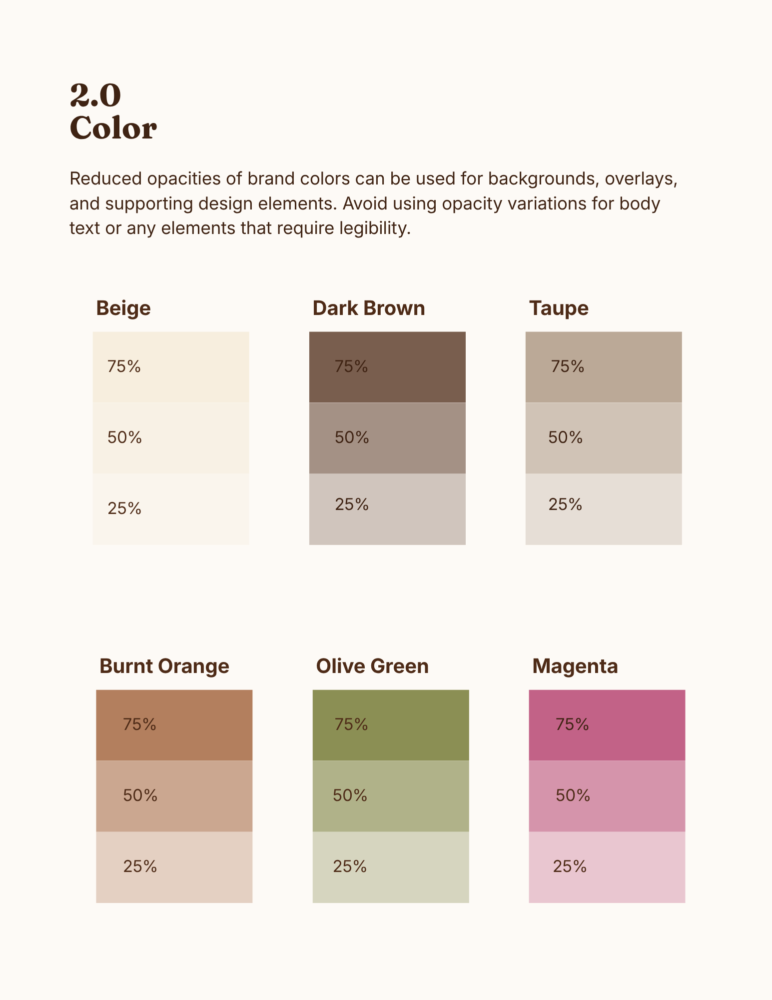
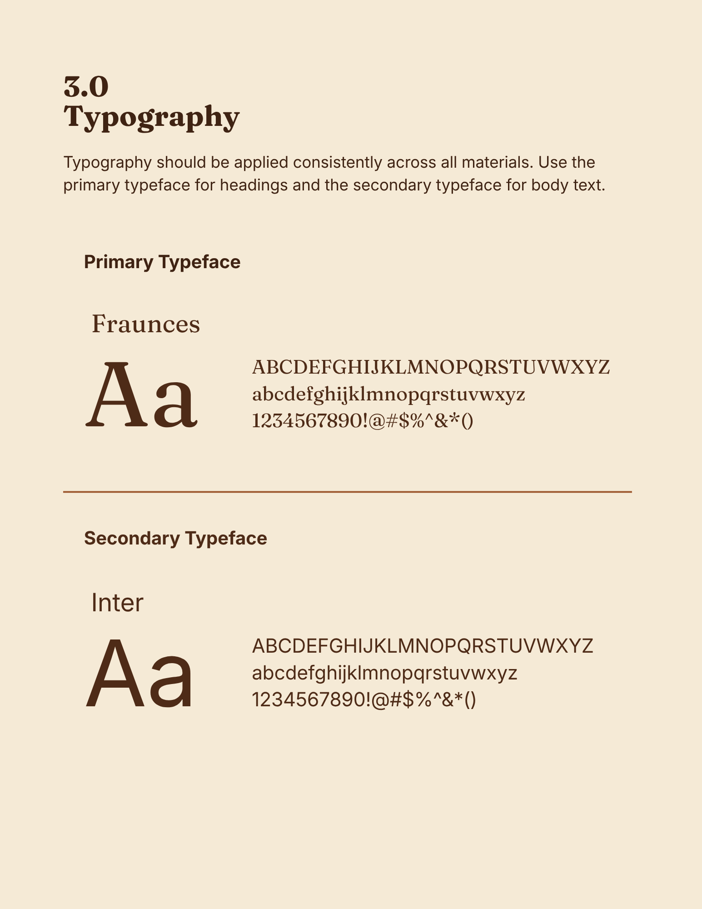
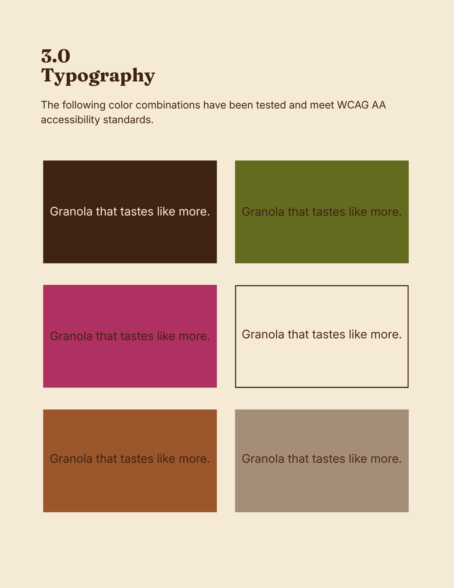
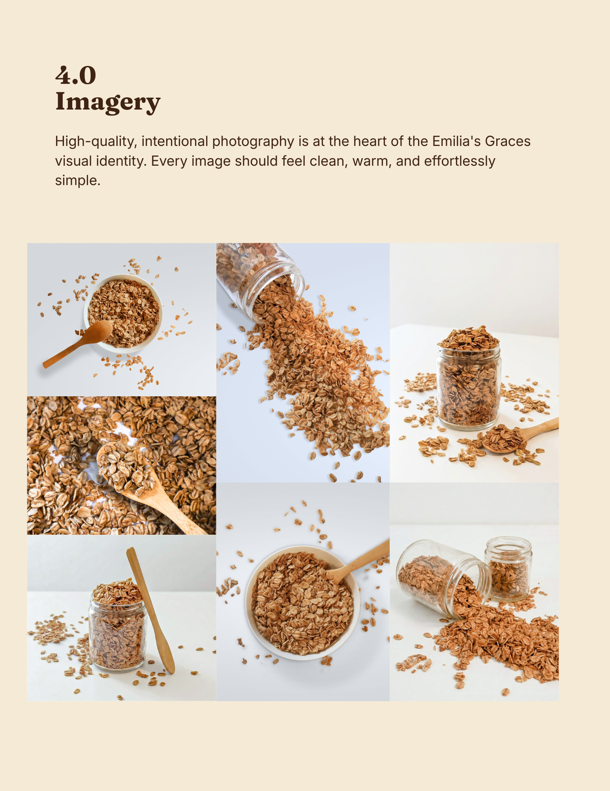
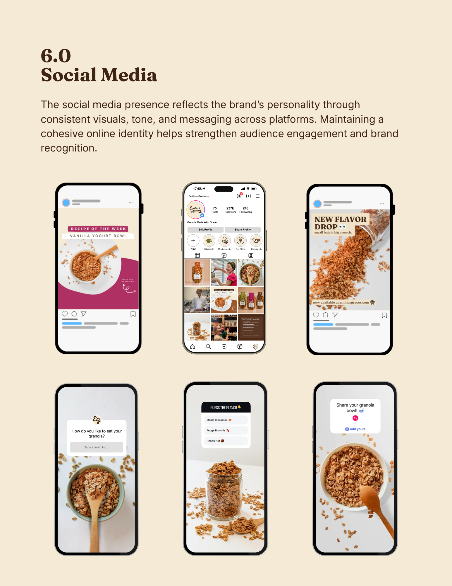
Photography
Product photography shot and directed for use across brand touchpoints.

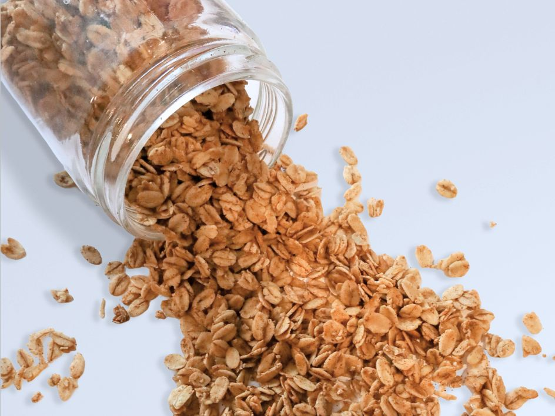
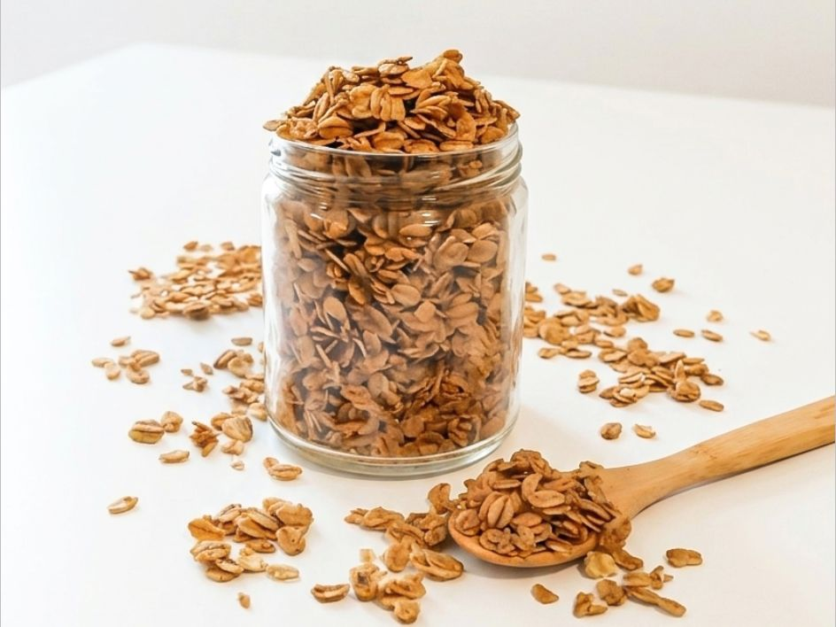
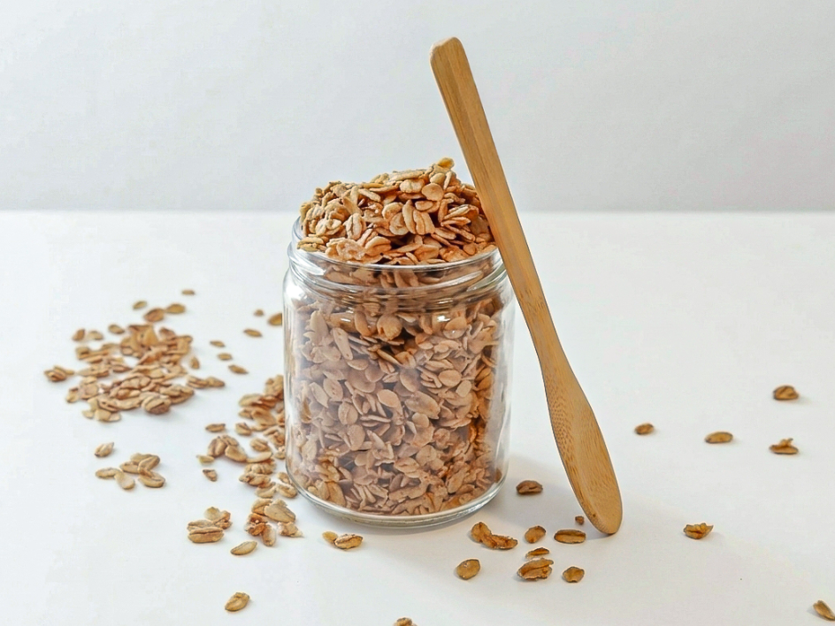
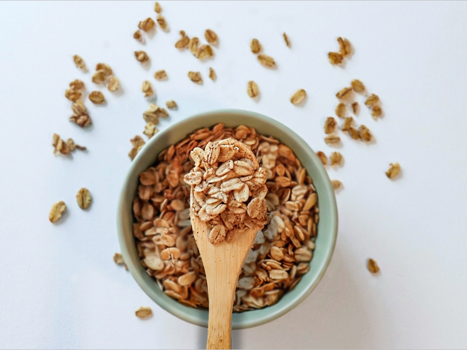
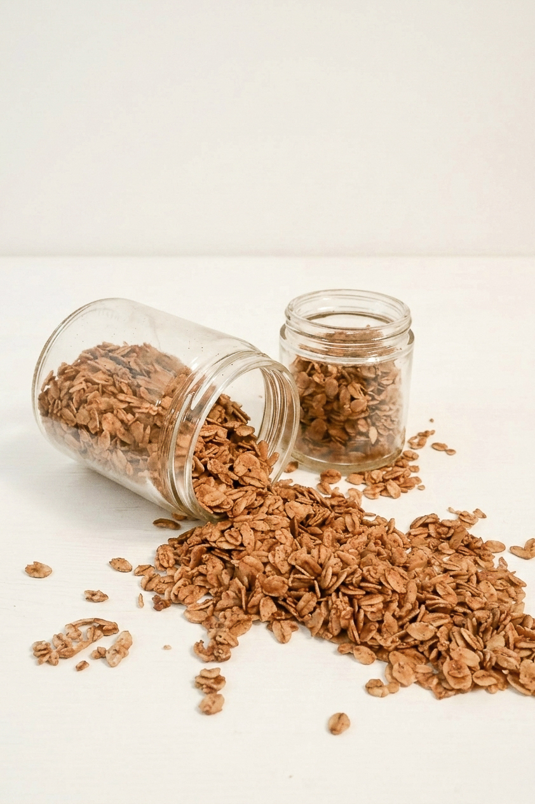
Emilia's Graces x UREC
A strategic brand activation pitch proposing a founder-led cooking class at JMU's UREC, connecting the brand to campus life through an existing format students already engage with. Developed independently as part of my role in social media and campus marketing at UREC.
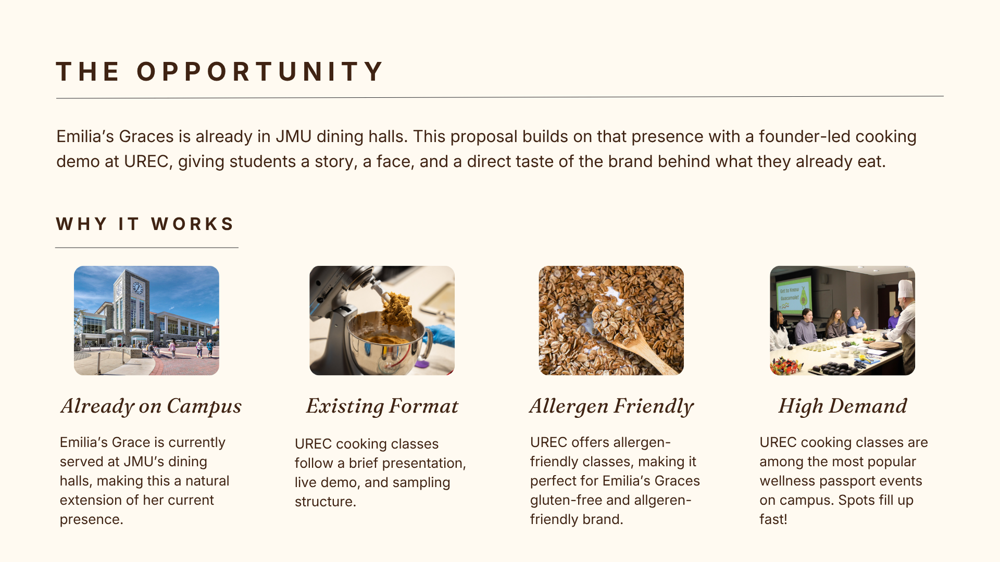
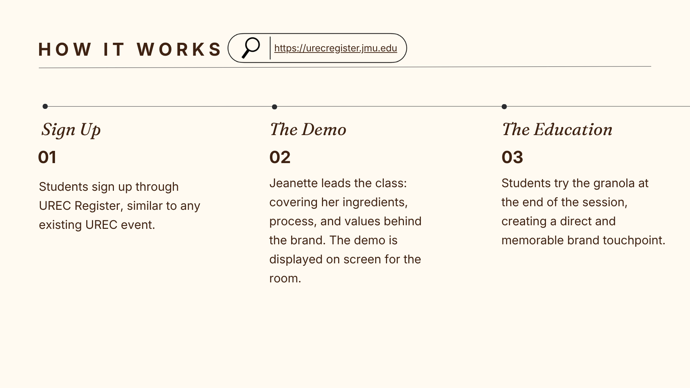